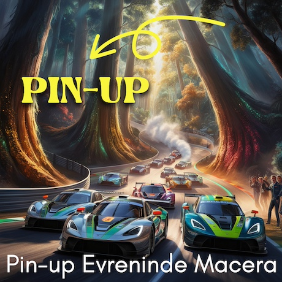
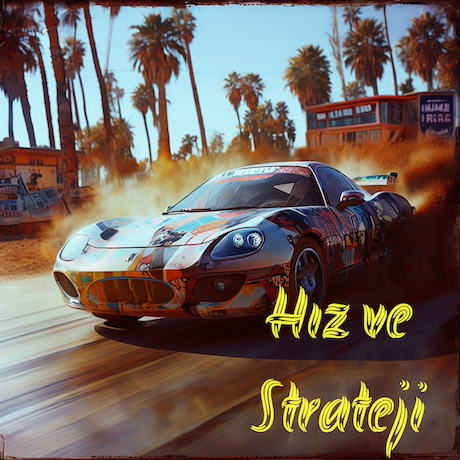
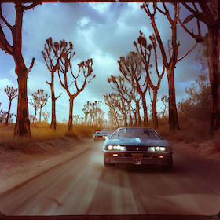
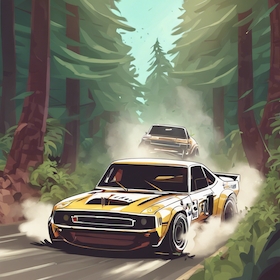
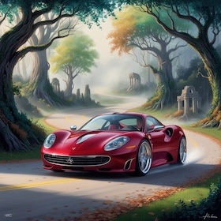

Car Forest Racing Pin-up Hikayesi
Pin-up Evreninde Macera
Car Forest Racing Pin-up evreninde, oyuncular kendilerini büyüleyici bir orman ortamında bulurlar. Yollar engebeli, ağaçlar devasa, hava ise nefes kesicidir. Ancak orman, her zaman masum bir yer değildir. Oyuncuların karşısına sürpriz engeller çıkar ve Pin-up evreninin zorlu koşulları, her an tetikte olmayı gerektirir.
Hız ve Strateji

Car Forest Racing Pin-up'ta sadece hız değil, aynı zamanda strateji de ön plandadır. Oyuncuların, ormanın zorlu koşullarında başarılı olabilmeleri için hız kadar, engelleri aşmak için akıllı kararlar almaları gerekmektedir. Bu yarış, oyunculara sadece bir hız deneyimi değil, aynı zamanda stratejik düşünme becerilerini de test etme fırsatı sunar.
Car Forest Racing Pin-up Galeri



